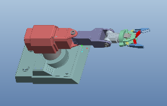

Export a PTC Creo Robot Assembly Model
In this example, you export a Creo™ (Pro/ENGINEER®) CAD assembly that represents a robot arm. The export procedure generates one XML file and a set of geometry files that you can import into Simscape™ Multibody™ to generate a new model.
The example begins with a procedure to export the CAD assembly. Information on the robot CAD files and CAD Export follows the export procedure. To import the robot assembly into a Simscape Multibody model, see Import a Robotic Arm CAD Model.
The following figure shows the robot CAD assembly that you export in this example.

Example Requirements
To successfully complete this example, you must meet the following requirements:
Have the latest version of Simscape Multibody Link installed on your machine.
Have completed the linking procedure for your Creo installation. The linking procedure adds a Simscape Multibody Link add-on tool to the installation.
Have access to the robot example files that accompany the Simscape Multibody Link installation.
Open the Assembly Model
Before you can export the robot assembly, you must load the assembly into Creo.
Open Creo on your machine.
Select File > Open
Navigate to the file directory that contains the robot CAD files.
Note
The directory that contains the robot CAD files for the Pro/ENGINEER platform is
<MATLAB Root>\toolbox\physmod\smlink\smlinkdemos\proe\robot
Select file
robot.ASM.Click Open.
The CAD platform opens the robot assembly.
Export the Model
Once you successfully open the robot CAD assembly in your Creo installation, you can export the assembly in format:
In the Creo toolbar, click Tools.
Select Simscape Multibody Link > Export and click Simscape Multibody to export in a format compatible with the latest Simscape Multibody technology.
In the File name field of the Select Folder dialog box, enter select a directory to export the files into.
Note
Do not enter a name in the File name field. The field should contain only a dot
.Click Open.
In the new dialog box, enter file name
sm_robotand click the green arrow.Note
Simscape Multibody Link generates a new XML multibody description file and a set of geometry files that you can import into a model.
Check the Exported Files
Confirm the following files exist in the export directory you specified:
About the Example CAD Files
The CAD assembly files are present in your Simscape Multibody Link installation. You can access the files in the following directory:
<MATLAB Root>\matlab\toolbox\physmod\smlink\smlinkdemos\... ...proe\robot
Note
If you are not sure what your MATLAB root directory is,
at the MATLAB command line enter matlabroot. MATLAB returns
the root directory for your installation.
The \proe\robot directory contains a set
of CAD files that define each CAD part and CAD assembly. Part file
names contain the file extension .PRT. Assembly file names contain
the extension .ASM.
The robot assembly contains nine parts and two assemblies: robot.ASM and grip.ASM. File robot.ASM models the robot root assembly. File grip.ASM models the robot grip subassembly.
The following table lists all files the example requires.
| File Name | Type |
|---|---|
| robot | Assembly |
| grip | |
| wrist | Part |
| upperarm | |
| secondfingerlink | |
| metacarples | |
| firstfingerlinkL | |
| forearm | |
| firstfingerlink | |
| fingertips | |
| base |
About CAD Export
The CAD export procedure generates one XML multibody description file and a set of geometry files. The XML file contains the structure of the assembly and the parameters that define each part. The geometry files define the 3-D surface shapes of the CAD parts. Once the export procedure is complete, you can import the XML multibody description file into Simscape Multibody. Simscape Multibody uses the file to automatically generate a new Simscape Multibody model.